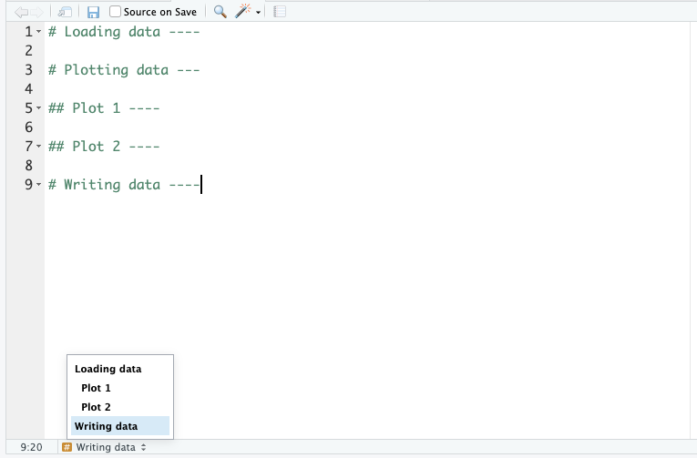

3 + 5[1] 812 / 7[1] 1.714286R is a statistical programming language. It is very popular in the data science field, including Bioinformatics. The term “R” is used to refer to both the programming language and the software that interprets the scripts written using it.
R does not involve lots of pointing and clicking
The learning curve might be steeper than with other software, but with R, the results of your analysis do not rely on remembering a succession of pointing and clicking, but instead on a series of written commands, and that’s a good thing! So, if you want to redo your analysis because you collected more data, you don’t have to remember which button you clicked in which order to obtain your results; you just have to run your script again.
Working with scripts makes the steps you used in your analysis clear, and the code you write can be inspected by someone else who can give you feedback and spot mistakes.
Working with scripts forces you to have a deeper understanding of what you are doing, and facilitates your learning and comprehension of the methods you use.
R code is great for reproducibility
Reproducibility is when someone else (including your future self) can obtain the same results from the same data set when using the same analysis.
R integrates with other tools to generate reports from your code. If you collect more data, or fix a mistake in your dataset, the figures and the statistical tests in your manuscript are updated automatically after running the code again.
An increasing number of journals and funding agencies expect analyses to be reproducible, so knowing R will give you an edge with these requirements.
R is interdisciplinary and extendable
With 10,000+ packages that can be installed to extend its capabilities, R provides a framework that allows you to combine statistical approaches from many scientific disciplines to best suit the analytical framework you need to analyze your data. For instance, R has packages for image analysis, GIS, time series, population genetics, and a lot more.
R works on data of different sizes
The skills you learn with R scale easily with the size of your dataset. Whether your dataset has hundreds or millions of lines, it won’t make much difference to you.
R is designed for data analysis. It comes with special data structures and data types that make handling of missing data and statistical factors convenient.
R can connect to spreadsheets, databases, and many other data formats, on your computer or on the web.
R produces high-quality graphics
The plotting functionality in R is endless, and allow you to adjust any aspect of your graph to convey most effectively the message from your data.
R has great support
Thousands of people use R daily. Many of them are willing to help you through mailing lists and websites such as Stack Overflow, or on the Posit community.
R is free, open-source and cross-platform
Anyone can inspect the source code to see how R works. Because of this transparency, there is less chance for mistakes, and if you (or someone else) find some, you can report and fix bugs.
RStudio is currently a very popular Integrated Development Environment (IDE) for working with R. An IDE is an application used by software developers that facilitates programming by offering source code editing, building and debugging tools all integrated into one application. To function correctly, RStudio needs R and therefore both need to be installed on your computer.
The RStudio Desktop open-source product is free under the Affero General Public License (AGPL) v3. Other versions of RStudio are also available.
We will use RStudio IDE to write code, navigate the files on our computer, inspect the variables we are going to create, and visualize the plots we will generate. RStudio can also be used for other things (e.g., version control, developing packages, writing Shiny apps) that we will not cover during the course

RStudio is divided into 4 “Panes”: the Source for your scripts and documents (top-left, in the default layout), your Environment/History (top-right), your Files/Plots/Packages/Help/Viewer (bottom-right), and the R Console (bottom-left). The placement of these panes and their content can be customized (see menu, Tools -> Global Options -> Pane Layout).
One of the advantages of using RStudio is that all the information you need to write code is available in a single window. Additionally, with many shortcuts, auto-completion, and highlighting for the major file types you use while developing in R, RStudio will make typing easier and less error-prone.
RStudio’s default preferences generally work well, but saving a work space to .RData can be cumbersome, especially if you are working with larger data sets as this would save all the data that is loaded into R into the .RData file.
To turn that off, go to Tools –> Global Options and select the ‘Never’ option for Save workspace to .RData' on exit.

A good way of staying organised is to keep all the files related to a given project together. Using that concept when programming is really helpful, because it makes it easier for the computer to find all the data, scripts and other information related to an analysis.
We often refer to this as the working directory. This simply is the starting point for the computer to look for stuff.
Because you easily accumulate a lot of files when analysing data, it’s good to be organised. During this course we’ll create a project folder called data-analysis, which we’ll make our working directory.
Within this folder we’ll have sub folders that allow us to further organise our data. We’ll use the following structure:
| Folder | Description |
|---|---|
| data | Contains the data files we’ll use in this course, for example surveys.csv. For your own analysis you might want to consider adding another folder within this to contain the raw data. It’s good practice to always keep an untouched copy of your raw data. This helps with transparency and allows you analyse data differently in the future. Aim to keep your data cleaning and analyses programmatically. |
| images | This folder will contain any images you might produce, for example for publications or data exploration. |
| scripts | Here we can store any scripts we create. Here it’s also good to be structured and organised, something we cover a bit more in Section 3.3.3. |
| … | The opportunities are endless. You can add folders for documents, presentations, etc. How you do things matters less than being consistent! |
All the files in the working directory can be referenced using relative paths. This allows you to move you working directory across your computer - or to other computers - without breaking any of the links within your scripts.
Relative paths are relative to a certain location on your computer. Absolute paths start from the absolute start of your hard drive. This is easiest illustrated with an example:
Relative path: data/data_01.csv
Absolute path: C:/Users/Jeff/Documents/data-analysis/data/surveys.csv
Before we start writing any code we’ll set up our working environment properly. To do this, we’ll create our data-analysis working directory, with all its sub folders.
The easiest way to set up a working directory in R is to create an R-project. This is simply a folder on your computer with a shortcut in it (ending in .RProj). When you double-click on the shortcut, it opens RStudio and sets the working directory to that particular folder.
To create an “R Project”:
File menu, click on New Project. Choose New Directory, then New Project.~/data-analysis).Create Project.Open in new session to ensure RStudio starts afresh.R will show you your current working directory in the Files pane. Alternatively, you can get it by typing in and running the getwd() command.
Complete Exercise 1 before proceeding.
The basis of programming is that we write down instructions for the computer to follow, and then we tell the computer to follow those instructions. We write, or code, instructions in R because it is a common language that both the computer and we can understand. We call the instructions commands and we tell the computer to follow the instructions by executing (also called running) those commands.
There are two main ways of interacting with R: by using the console or by using script files (plain text files that contain your code). The console pane (in RStudio, the bottom left panel) is the place where commands written in the R language can be typed and executed immediately by the computer. It is also where the results will be shown for commands that have been executed. You can type commands directly into the console and press Enter to execute those commands, but they will be forgotten when you close the session.
Because we want our code and workflow to be reproducible, it is better to type the commands we want in the script editor, and save the script. This way, there is a complete record of what we did, and anyone (including our future selves!) can easily replicate the results on their computer.
RStudio allows you to execute commands directly from the script editor by using the ControlControl + EnterEnter shortcut (on Macs, + will work, too). The command on the current line in the script (indicated by the cursor) or all of the commands in the currently selected text will be sent to the console and executed when you press ControlControl + EnterEnter. You can find other keyboard shortcuts in this RStudio cheatsheet about the RStudio IDE (PDF).
If R is ready to accept commands, the R console shows a > prompt. If it receives a command (by typing, copy-pasting or sent from the script editor using ControlControl + EnterEnter), R will try to execute it, and when ready, will show the results and come back with a new > prompt to wait for new commands.
If R is still waiting for you to enter more data because it isn’t complete yet, the console will show a + prompt. It means that you haven’t finished entering a complete command. This is because you have not ‘closed’ a parenthesis or quotation, i.e. you don’t have the same number of left-parentheses as right-parentheses, or the same number of opening and closing quotation marks. When this happens, and you thought you finished typing your command, click inside the console window and press EscapeEscape. This will cancel the incomplete command and return you to the > prompt.
As you increase your code, your script can become quite long. Often we want to split analyses into multiple scripts, for example:
01_preprocessing may contain data cleaning steps02_exploration may contain exploratory plots of your data03_analysis could contain (statistical) analyses of your data04_figures could contain code for figures, ready for publicationEach of these files could be hundreds of lines long. So, keeping track of your code makes sense. We can do that with code headings, which use the # heading ---- syntax. You can even add different heading levels, by increasing the number of # at the start.
This creates a little table of contents in the bottom-left corner of the script pane:

The simplest way of using a programming language is to use it interactively. We can do this by typing directly into the console / terminal.
For example, you can use R as a glorified calculator:
3 + 5[1] 812 / 7[1] 1.714286For example, you can use Python as a glorified calculator:
3 + 5812 / 71.7142857142857142Running code like this directly in the console is generally not a good idea, because then we can’t keep track of what we are doing. So, we first need to create a script to save our code in. Then, we can then play around.
Please complete Exercise 2 and Exercise 3.
Functions are “canned scripts” that automate more complicated sets of commands including operations assignments, etc. Many functions are predefined, or can be made available by importing packages (more on that later). A function usually takes one or more inputs called arguments. Functions often (but not always) return a value. A typical example would be the function sqrt(). The input (the argument) must be a number, and the return value (in fact, the output) is the square root of that number.
sqrt(9)The sqrt() function is not available by default, but is stored in the math module. Before we can use it, we need to load this module:
import mathNext, we can use the sqrt() function, specifying that it comes from the mathmodule. We separate the two with a full-stop (.):
math.sqrt(9)3.0Here, the value 9 is given to the sqrt() function. This function calculates the square root, and returns the value. This function is very simple, because it takes just one argument.
The return ‘value’ of a function need not be numerical (like that of sqrt()), and it also does not need to be a single item: it can be a set of things, or even a data set. We’ll see that when we read data files.
Arguments allow you to control the behaviour of a function. They can be anything, not only numbers or file names. Exactly what each argument means differs per function and can be looked up in the documentation. Some functions take arguments which may either be specified by the user, or, if left out, take on a default value: these are called options.
Options are typically used to alter the way the function operates, such as if it should ignore missing values, or what symbol to use in a plot. However, if you want something specific, you can specify a value of your choice which will be used instead of the default.
Let’s try a function that can take multiple arguments: round().
round(3.14159)[1] 3round(3.14159)3Here, we’ve called round() with just one argument, 3.14159, and it has returned the value 3. That’s because the default is to round to the nearest whole number. If we want more digits we can see how to do that by getting information about the round() function.
We can use args(round) to find what arguments it takes, or look at the help for this function using ?round.
args(round)function (x, digits = 0, ...)
NULLWe see that if we want a different number of digits, we can type digits = 2 or however many we want. For example:
round(x = 3.14159, digits = 2)If you provide the arguments in the exact same order as they are defined you don’t have to name them:
round(3.14159, 2)And if you do name the arguments, you can switch their order:
round(digits = 2, x = 3.14159)We can use help(round) to find what arguments it takes.
help(round)We see that if we want a different number of digits, we can type ndigits = 2 or however many we want. For example:
round(3.14159, ndigits = 2)3.14If you provide the arguments in the exact same order as they are defined you don’t have to name them:
round(3.14159, 2)3.14Python still expects the arguments in the correct order, so this gives an error:
round(ndigits = 2, 3.14159)It’s good practice be explicit about the names of the arguments. That way you can avoid confusion later on when looking back at your code or when sharing your code.
LO: adding functionality (installing + loading packages) LO: For Python: requires numpy for next section
3.3.2 Comments in code
It’s always a good idea to add explanations to your code. We can do that with the hash tag
#symbol, for example:It’s always a good idea to add lots of comments to your code. What makes sense to you in that moment, might not a week later. Similarly, when sharing code with colleagues and collaborators, it’s always good to be as clear as possible.